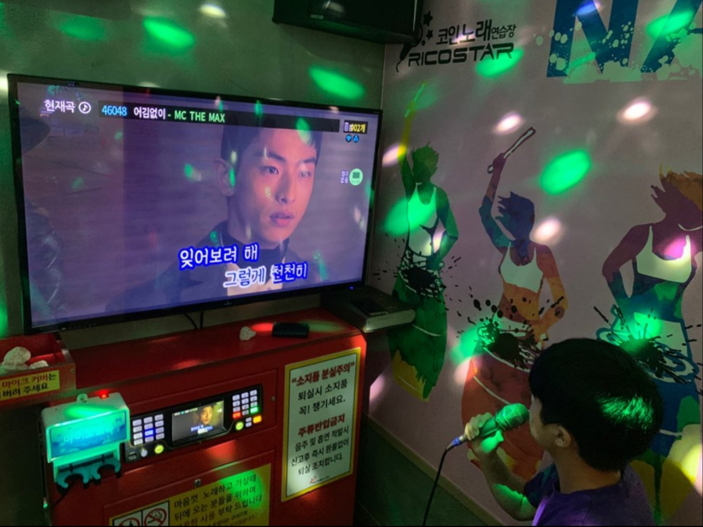
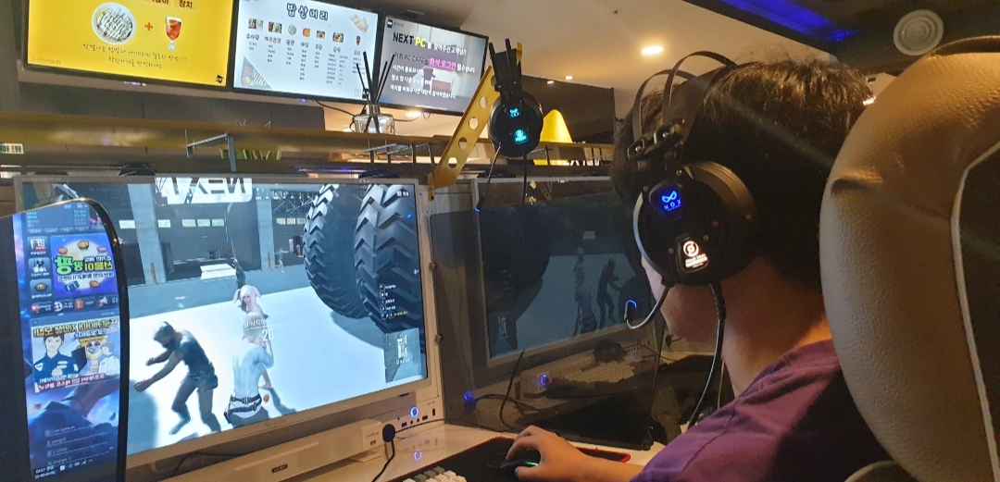

- 
My hobby is going to coin karaoke alone. It's called 'Honcono.' I like to sing, relieve stress and feel cool at karaoke.
- My second hobby is taking a nap. Because I study using a computer, my eyes get tired often, so I feel refreshed when I take a nap. So I tend to sleep a lot.
- 
Finally, I like games. I often spend my free time playing FPS games or RPG games with my friends.